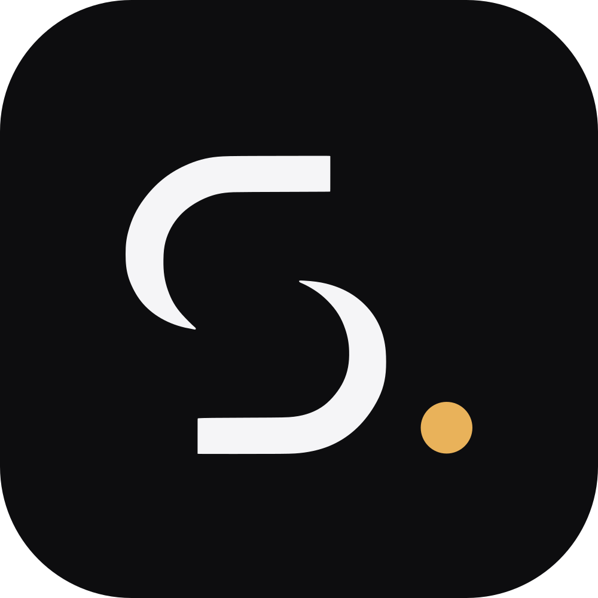

Chapter05
Logo system.
Eleven variants derived from one master: the client’s own hand-drawn wordmark, refined letter by letter, with three points of light — in the A, the Z and the D.
- 5.1The family · primary lockups
- 5.2The family · marks and small sizes
- 5.3Which logo where
Sanzeed Mirza · Experiential Design ConsultantBrand Guidelines · Version 1.0 · November 2026
5.1 · The family — primary lockups
Four lockups for every context.
Shown in the full-colour-dark version on Gallery Black. Files: 02_LOGO_SYSTEM/SVG/sanzeed-<variant>--<colour>.svg, with PDF, EPS, PNG, JPG and WebP beside them.
5.2 · The family — marks and small sizes
The symbol, the monogram and the small sizes.
Variants 5–11. Below 120 px / 28 mm the simplified wordmark replaces the primary; below 24 px / 6 mm the small-size symbol replaces the symbol.

6 · Monogram
7 · Wordmark (plain)
The three gold points are part of the logo. In single-colour versions they take the ink colour. The ring around the Z point is part of the mark and always shows the background through it. The travelling “beam dot” exists only in motion (chapter 23). The plain wordmark is for processes that cannot produce a dot — engraving, embroidery, single-tool cutting — and nowhere else.
5.3 · Which logo where
The right variant for the surface.
Brand kit rule 1. When in doubt: primary wordmark on screens, horizontal-descriptor on paper, the symbol wherever the space is square.
| Context | Use this variant | Colour version | Minimum |
|---|---|---|---|
| Website header, social covers, presentation title | primary-wordmark | full-colour-dark on dark · full-colour-light on light | 120 px / 28 mm |
| Stationery header, document covers, signage, press | horizontal-descriptor (or secondary-symbol-wordmark) | full-colour-light on Plaster · full-colour-dark on black | 220 px / 50 mm |
| Square or centred compositions, end cards, stamps, ID cards | vertical-stacked | per background | 90 px / 22 mm |
| Avatars, favicons, app icons, watermarks, stamps | symbol / symbol-tile | tile dark by default; light tile for light surfaces | 16 px / 6 mm |
| Seals, embossing, ID-card reverse, pattern | monogram | single ink | 16 px / 6 mm |
| Engraving, embroidery, single-tool cutting | wordmark-plain | black or white | 28 mm |
| Below 120 px / 28 mm wide | simplified-small-size | per background | 24 px / 6 mm |
| Below 24 px | symbol-small-size | per background | 12 px |
| Letters, thank-you cards, personal sign-offs | signature | ink on light · white on dark · gold for foil | 160 px / 32 mm |